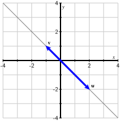

That is, each term is the product of a scalar and a thing, and finitely many such terms are added together.
Remark1.3.2.
If you have seen linear models, then this should look familiar to you. A linear model can be expressed as a linear combination of data variables. We typically use \(\beta_0,
\beta_1, \dots, \beta_k\) to denote the scalars, which are the parameters of the linear model. And we write the data variables as \(\xvec_1, \xvec_2, \dots, \xvec_k\text{.}\) So our linear model looks like
In this activity, we will look at linear combinations of a pair of vectors, \(\vvec = \left[\begin{array}{r} 2 \\ 1 \end{array}\right]\) and \(\wvec = \left[\begin{array}{r} 1 \\ 2 \end{array}\right]
\text{.}\)
The diagram below can be used to construct linear combinations whose weights \(c\) and \(d\) may be varied using the sliders at the top. The vectors \(\vvec\) and \(\wvec\) are outlined while the linear combination
\begin{equation*}
c\vvec + d\wvec
\end{equation*}
is shaded red.
Figure1.3.3.Linear combinations of vectors \(\vvec\) and \(\wvec\text{.}\)
The weight \(d\) is initially set to 0. Explain what happens as you vary \(c\) while keeping \(d=0\text{.}\) How is this related to scalar multiplication?
What is the linear combination of \(\vvec\) and \(\wvec\) when \(c = 1\) and \(d=-2\text{?}\) You may find this result using the diagram, but you should also verify it by computing the linear combination.
Describe the vectors that arise when the weight \(d\) is set to 1 and \(c\) is varied. How is this related to our investigations in the preview activity?
Can the vector \(\left[\begin{array}{r} 0 \\ 0 \end{array} \right]\) be expressed as a linear combination of \(\vvec\) and \(\wvec\text{?}\) If so, what are the weights \(c\) and \(d\text{?}\)
Can the vector \(\left[\begin{array}{r} 3 \\ 0 \end{array} \right]\) be expressed as a linear combination of \(\vvec\) and \(\wvec\text{?}\) If so, what are the weights \(c\) and \(d\text{?}\)
Can the vector \(\left[\begin{array}{r} 1.3 \\ -1.7 \end{array} \right]\) be expressed as a linear combination of \(\vvec\) and \(\wvec\text{?}\) What about the vector \(\left[\begin{array}{r} 15.2 \\ 7.1 \end{array} \right]\text{?}\) For each write down a system of equations that can be used to answer the question. If you know how to solve such a system, go ahead. But we will be learning a general method for this soon.
Are there any two-dimensional vectors that cannot be expressed as linear combinations of \(\vvec\) and \(\wvec\text{?}\) (Hint: Think geometrically.)
When \(d=1\) and \(c\) is allowed to vary, the linear combinations lie on the line through \(\wvec\) parallel to \(\vvec\text{.}\)
If the weights \(c=0\) and \(d=0\text{,}\) then the linear combination is the vector \(\twovec{0}{0}\text{.}\)
If the weights \(c=2\) and \(d=-1\text{,}\) then the linear combination is the vector \(\twovec{3}{0}\text{.}\) You could determine this by a little trial and error, or using a little algebra. \(c \vvec + d \wvec = \twovec 30\) is equivalent to
We will learn general methods for solving systems of equations like this soon. But in this case, the second equation tells us that \(c = -2d\text{.}\) Plugging that into the first equation gives \(-4d + d = -3d = 3\text{,}\) so \(d = -1\) and \(c = 2\text{.}\)
We don’t have a 0 on the right hand side this time, so the algebra is a little messier. But both systems have a solution. Stay tuned to learn how to systematically solve such systems.
Every two-dimensional vector can be written as a linear combination of \(\vvec\) and \(\wvec\text{.}\) The number \(c\) chooses a line parallel to \(\wvec\text{,}\) and \(d\) chooses a point along that line. Since we can pick any line parallel to \(\wvec\) and any point along that line, this allows us to get to any point in the plane. Use the interactive app above to illustrate this. Note that this only works because \(\vvec\) and \(\wvec\) are not parllel.
We will soon learn an algebraic way to arrive at the same conclusion.
This activity illustrates how linear combinations are constructed geometrically: the linear combination \(c\vvec +
d\wvec\) is found by walking along \(\vvec\) a total of \(c\) times followed by walking along \(\wvec\) a total of \(d\) times. When one of the weights is held constant while the other varies, the vector moves along a line.
Example1.3.4.
Suppose we have vectors \(\vvec = \twovec3{-1}\) and \(\wvec=\twovec43\text{.}\) Suppose we want to know whether we can describe the vector \(\bvec=\twovec{-11}{-18}\) as a linear combination of \(\vvec\) and \(\wvec\text{.}\) In other words, we would like to know whether there are weights \(c\) and \(d\) such that
This means that \(\bvec\) is a linear combination of \(\vvec\) and \(\wvec\) if and only if this linear system of equations has a solution.
Example 1.3.4 demonstrates a connection between linear combinations of vectors and linear systems of equations: Asking whether a vector \(\bvec\) is a linear combination of vectors \(\vvec_1,\vvec_2,\ldots,\vvec_n\) is equivalent to asking whether an associated linear system has a solution. In Chapter 2 we will study linear systems more carefully, giving a careful definition and demonstrating how we can determine the solutions to any such system of equations.
Activity1.3.2.Linear combinations and linear systems.
can \(\bvec\) be expressed as a linear combination of \(\vvec_1\text{,}\)\(\vvec_2\text{,}\) and \(\vvec_3\text{?}\) Rephrase this question by writing a linear system for the weights \(c_1\text{,}\)\(c_2\text{,}\) and \(c_3\text{.}\)
Now let’s go in the other direction. Consider the following linear system.
Identify vectors \(\vvec_1\text{,}\)\(\vvec_2\text{,}\)\(\vvec_3\text{,}\) and \(\bvec\) such that the question "Is this linear system consistent?" is equivalent to the question "Can \(\bvec\) be expressed as a linear combination of \(\vvec_1\text{,}\)\(\vvec_2\text{,}\) and \(\vvec_3\text{?}\)"
Consider the vectors \(\vvec=\twovec{-1}1\) and \(\wvec=\twovec{2}{-2}\text{,}\) as shown in Figure 1.3.6.

Figure1.3.6.Vectors \(\vvec\) and \(\wvec\text{.}\)
These vectors appear to lie on the same line, a fact that becomes apparent once we notice that \(\wvec =
-2\vvec\text{.}\) Intuitively, we think of the linear combination
\begin{equation*}
c\vvec + d\wvec
\end{equation*}
as the result of walking \(c\) times in the \(\vvec\) direction and \(d\) times in the \(\wvec\) direction. With these vectors, we are always walking along the same line so it would seem that any linear combination of these vectors should lie on that line. In addition, a vector that is not on the line, say \(\bvec
= \twovec30\text{,}\) should not be expressible as a linear combination of \(\vvec\) and \(\wvec\text{.}\)
Subsection1.3.1Summary
This section has introduced linear combinations of vectors and their connection to linear systems.
Given a set of vectors and a set of scalars we call weights, we can create a linear combination using scalar multiplication and vector addition.
To know whether one vector can be formed as a linear combination of some other vectors is equivalent to solving a (linear) system of equations.
We will learn more about both linear combinations and linear systems in what follows.
Compute the vectors \(-3\vvec\text{,}\)\(2\wvec\text{,}\)\(\vvec + \wvec\text{,}\) and \(\vvec - \wvec\) and add them into the sketch above.
Sketch below the set of vectors having the form \(2\vvec +
c\wvec\) where \(c\) is any scalar.
Sketch below the line \(y=3x - 2\text{.}\) Then identify two vectors \(\vvec\) and \(\wvec\) so that this line is described by \(\vvec + c\wvec\text{.}\) Are there other choices for the vectors \(\vvec\) and \(\wvec\text{?}\)
2.
Shown below are two vectors \(\vvec\) and \(\wvec\)
Express the labeled points as linear combinations of \(\vvec\) and \(\wvec\text{.}\)
Sketch the line described parametrically as \(-2\vvec +
c\wvec\text{.}\)
3.
Nutritional information about a breakfast cereal is printed on the box. For instance, one serving of Frosted Flakes has 111 calories, 140 milligrams of sodium, and 1.2 grams of protein. We may represent this as the case vector
One serving of Cocoa Puffs has 120 calories, 105 milligrams of sodium, and 1.0 grams of protein.
Write the vector describing the nutritional content of Cocoa Puffs.
Suppose you eat \(c\) servings of Frosted Flakes and \(d\) servings of Cocoa Puffs. Use the language of vectors and linear combinations to express the quantities of calories, sodium, and protein you have consumed.
How many servings of each cereal have you eaten if you have consumed 342 calories, 385 milligrams of sodium, and 3.4 grams of protein.
Suppose your sister consumed 250 calories, 200 milligrams of sodium, and 4 grams of protein. What can you conclude about her breakfast?